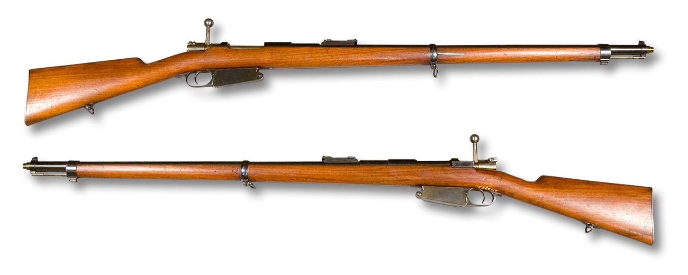
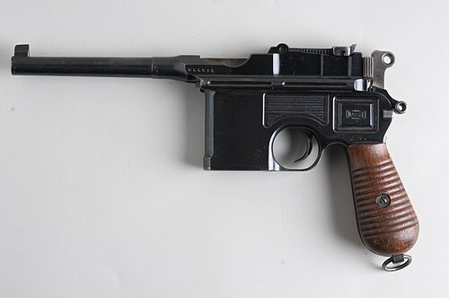
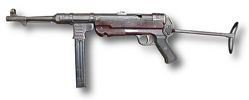
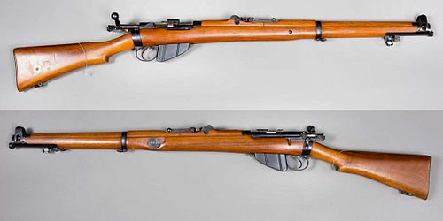
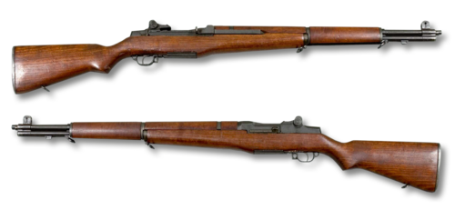
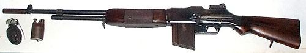
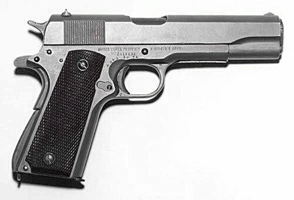
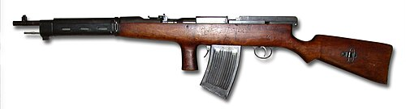
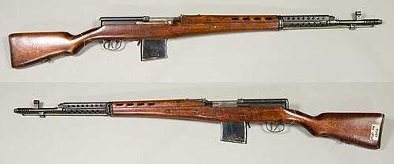
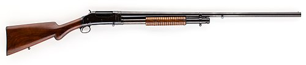

STG 44

II. Dünya Savaşı'nda Nazi Almanyası tarafından tasarlanmıştır. AK-47 bu silahtan esinlenerek üretilmiştir. 7.62 mm mermi kullanılarak kesintisiz dakikada 600 mermi atabilmektedir. Tam otomatik ve yarı otomatik kullanılabilmektedir.

Belçika menşeli bir sürgülü tüfektir. 1889 Belçika Mauser'i, 1890 Türk Mauser'i ve 1891 Arjantin Mauser'i olarak bilinir hale gelmiştir. Mauser 1889’ların etkili menzili 500, maksimum menziliyse 1900 metreydi. 7.92×57mm mühimmat kullanır.

Mauser tarafından 1896'dan 1937'ye kadar üretilen yarı otomatik bir tabancadır. Mauser C96'yı diğer silahlardan ayıran en önemli özellikleri tetik önündeki şarjörün sabit, namlusunun uzun ve arkasına dipçik takılabilir olmasıdır. 7.63×25mm Mauser mermisi kullanır.

Alman yapımı bir hafif makineli silahtır. II. Dünya Savaşı'nda Almanya ve diğer Mihver kuvvetlerce yaygın olarak kullanıldı. 1938'de Heinrich Vollmer tarafından tasarlandı. Piyadeler, paraşütçüler ve manga liderleri tarafınca sıkça kullanıldı.

Lee-Enfield, Büyük Britanya yapımı bir tüfek. 1907'de hizmete girmiştir. Bir defada 10 mermi alabilmektedir. İlk olarak 1895 yılında James Paris Lee tarafından tasarlanmıştır. Başlıca kullanıcıları İngiliz Milletler Topluluğu olmuştur.

M1 Garand, II. Dünya Savaşı yarı otomatik bir Amerikan piyade tüfeğidir. 1936'da servis tüfeği olmuştur. 7.62x51mm çapında NATO mermisi kullanmaktadır. Amerikalılara savaşı kazandıran en önemli silahlardan biri olarak görülür.
II. Dünya Savaşı'nda Nazi Almanyası tarafından tasarlanmıştır. AK-47 bu silahtan esinlenerek üretilmiştir. 7.62 mm mermi kullanılarak kesintisiz dakikada 600 mermi atabilmektedir. Tam otomatik ve yarı otomatik kullanılabilmektedir.

II. Dünya Savaşı'nda ABD birliklerinde otomatik tüfek (ya da makineli tüfek)-hafif makineli sınıfında hizmet veren bir tüfek ailesidir.Ağır bir tüfektir ve az mermi alır fakat savaşta etkin rol oynayan tüfeklerden biridir. En karakteristik özelliği hızlı atışıdır.Ağırlık kusuruna rağmen 7.62'lik güçlü mermisi ve keskin nişan için namlunun ucundaki iğnesi ile etkili bir piyade silahıdır.

Çekoslovak ve İngiliz ortak yapımı Makineli tüfektir. 1938 yılında servise girip 1958'de servisten çıkmıştır. Benzer versiyonu L4 hala Birleşik Krallık tarafından kullanılmaktadır. Menzili 550 metre olan Bren hafif bir silahtır. Bu silahta .303 mermisi kullanılmıştır.

Colt M1911, Colt tarafından üretilen ABD yapımı yarı otomatik bir tabancadır. Silah 1911-1986 yılları arasında ABD Silahlı Kuvvetleri'nin standart hizmet tabancası idi. John Browning tarafından tasarlanmıştır. Şarjörü 7 mermi almaktadır.

Fedorov Avtomat, kısa geri tepmeli , kilitli mekanizmalı ve kapalı sürgüden ateş eden bir silahtır . Sürgü kilitlemesi, sürgüye monte edilmiş ve her birinde biri kare diğeri yuvarlak olmak üzere iki çıkıntı bulunan, bir sac kapakla yerinde tutulan simetrik bir çift plaka ile sağlanır.Fedorov, kendi deneysel kenarsız 6,5 mm fişeği olan 6,5 mm Fedorov fişeği için tasarlanmış, şarjörlü sabit bir otomatik tüfek prototipi sundu.

İtalyan yapımı , sürgülü mekanizmalı, şarjörlü, tekrarlayan askeri tüfek ve karabina serisi için sıklıkla kullanılan isimlerdir . 1891 yılında tanıtılan tüfek, resmi olarak Fucile Modello 1891 (Model 1891 Tüfeği) olarak adlandırılmıştır.Kenarsız 6,5×52 mm Carcano mermisi kullanır.

Luger; 1898 yılında Georg Luger tarafından patenti alınmış, Alman silah üreticisi Deutsche Waffen- und Munitionsfabriken (DWM) tarafından 1900 yılından itibaren üretilmiş; yarı otomatik, kendini dolduran tabanca. 20. yüzyılın ilk yarısında siviller ve ordu mensupları için popüler bir silah olmuştur.

I. Dünya Savaşı sırasında standart M1911 tabancasını desteklemek için 1917'de Amerika Birleşik Devletleri Ordusu tarafından kabul edilen altı atışlı, 45 ACP çaplı bir altıpatlardır.

Alman yapımı makineli tüfektir. 1942 yılında üretilmiştir. Çoğu savaş tarihçisine göre en iyi tüfek tasarımlarından biri olarak görülmektedir. 7,92mm'lik mermi kullanır. Atış hızı bakımından hafif bir makineli tüfeğin ulaşabileceği en yüksek hız olan 1200 adet/dakika hıza ulaşmıştır.Düşman askerleri ona "Hitler'in Testeresi" adını takmıştır. Bugünkü M60'lar bu tüfek örnek alınarak tasarlanmıştır. MG42'nin tasarımı "ne kadar çok mermi atarsa o kadar çok düşmanı vurma şansı olur" düşüncesiyle yapılmıştır.

Mosin-Nagant, Rus yapımı elle kurmalı piyade tüfeğidir. Tüfek 1891 yılında Rus yüzbaşı Sergei Mosin ve Belçikalı Nagant firması tarafından tasarlanıp o yıl hizmete konulmuştur. 1965 yılına kadar üretilip 1998 yılına kadar hizmette kalmıştır. Rus-Japon Savaşı, Kore Savaşı, I. Dünya Savaşı ve II. Dünya Savaşı boyunca hep hizmette kalmıştır.Ünlü Rus keskin nişancı Vassili Zaitsev de bu tüfeği kullanmıştır.

II. Dünya Savaşı sırasında en çok üretilen Rus yapımı silahlardan biridir.71 fişeklik tambura ve 35 fişeklik şarjöre sahipti. 7.62 x 25 mm'lik fişek kullanıyordu. Kutu ve yuvarlak şarjör olmak üzere iki tip şarjör kullanılabilinmekteydi. II. Dünya Savaşı'ndan sonra Kore Savaşı'nda Kuzey Kore ve Çin tarafından kullanıldı.

"Sveta" olarak da bilinen Sovyet yapımı bir yarı otomatik tüfektir. İkinci Dünya Savaşı ve sonrasında hizmet görmüştür, tasarlanırken Sovyet Kızıl Ordusunun yeni hizmet tüfeği olması amaçlanmıştır. Ancak Nazi Almanyası'nın işgali nedeniyle üretim yarıda kalmıştır ve İkinci Dünya Savaşı boyunca eski Mosin-Nagant tüfeklere dönülmüştür.

Thompson, tamburalı (yuvarlak) ve düz şarjör takılan bir silahtır. Tamburalı şarjörü 50, 75 veya 100, düz şarjörü ise 20 veya 30 tane mermi alabilir.45 kalibrelik mermi atar.Etkili menzili hava şartları ile de doğru orantılı olarak 50 ila 75 metre arasıdır, ağır ama etkilidir. 4.9 kg ağırlığındadır. Atış değeri dakikada 600-800 mermidir. Hafif makineli silah sınıfındadır.

John moses browning tarafından tasarlanmış bir pompalı tüfektir. 1897'de satışa sunulmuş, 1899'da askeri amaçla kullanılmaya başlanmış. ABD birinci dünya savaşı'na girdiğinde siper savaşına uygun olacak şekilde modifiye edilmiş, süngülük ve el yakmaması için ısı kalkanı eklenmiş versiyonunu askerlerine dağıtılmıştır.Silah o kadar etkili olmuştur ki almanlar bunun savaş kurallarını ihlal ettiğini ve gereksiz acı çektirdiğini iddia edip silah ile yakalanan amerikan askerlerinin cezalandırılacağını ilan etmiş. ABD de buna karşılık olarak alev makinesi veya testere dişli süngüyle yakalanan alman askerlerinin cezalandırılacağını ilan etmiştir.